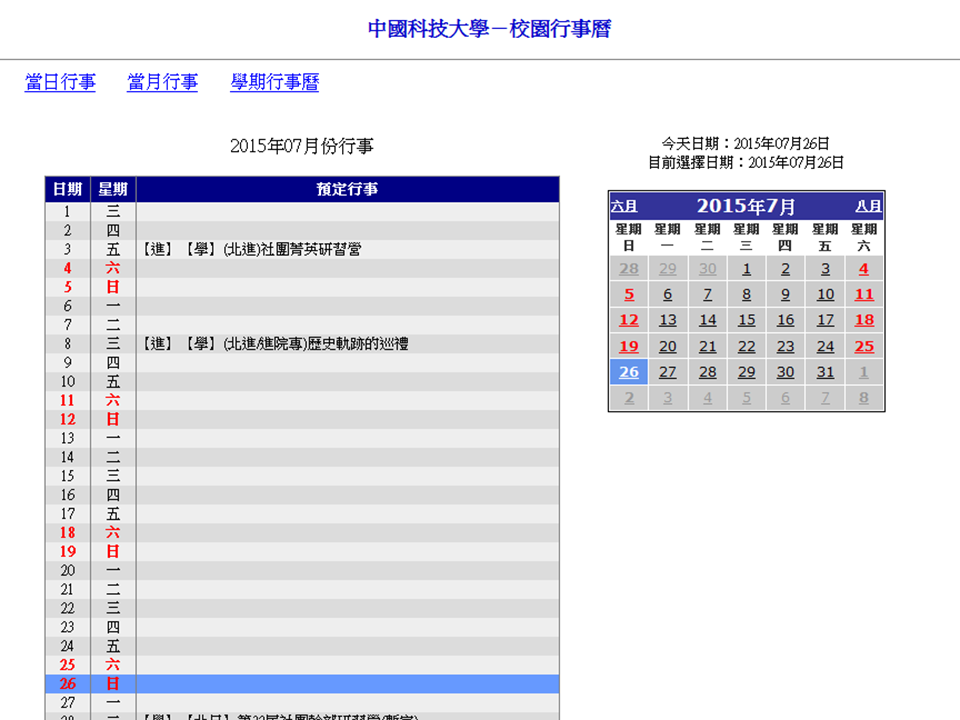

人生就像是一場角色扮演遊戲
在什麼時間，在什麼地方，是什麼角色，就是扮演好自己的角色
盡力去做好自已應負的責任
About
一生懸命
一以貫之
喜愛程式
每每沉侵於解謎的快感
腳踏實地，一步一腳印，在不斷重複的流程中
- 好求甚解
- 目標完成
- 驗證測試
- 持續改進
精益求精，感受到自己的成長
Experience
技術經理
多普達國際股份有限公司
2012/11 ~ Present
資深工程師
台灣數位學習股份有限公司
2008/09 ~ 2012/11
實習生
中國技術學院電算中心
2003/07 ~ 2006/05
Education
台北科技大學
碩士，資訊工程所
2006 ~ 2009
中國科技大學二技
學士，資管所
2006 ~ 2009
Works
自己創作
多普達國際股份有限公司
台灣數位學習股份有限公司
PMS, Powercam Media System
改名為 FMS
是個適合學校、企業或個人安裝的 MOOCS，支援 Powercam 及一般常見格式的影片上傳並轉檔成 MP4 來適應各個不同的閱讀平台也支援相簿、PDF、MP3、文件等多種不同格式的多媒體上傳、另外也有線上直播等功能。
角色：主要開發負責人及維護
負責項目：
- 整個系統主要設計規劃及開發
- 可自訂首頁區塊及 css，跟 iGoogle 類似，有訂閱 RSS、html 區塊、slide 播放...功能
- 影片上傳轉檔
- 線上觀看影音
- 多媒體檔案上傳
- mobile device 觀看
- powercam 上傳
- 演講網轉移至 PMS
- PMS windows 安裝包 (整合 apache+php+mysql)
- 資料可以分享至 powercam.cc
- PMS 自有訂閱(類似 RSS)
- PMS 分散式結構，將靜態檔案轉移及近端 server 由近端 server 供使用者下載
- PMS 子母架構，由 portal 母站，主控可以建立多個不同的 PMS 子架並將資料集中在母站，例如大學可以為各個不同系所建立子站，學生由母站進入
- SEO
- 客戶 server 維護
- 系統更新安裝包

PowerCam.cc
已轉移至 www.camdemy.com
MOOCS 概念的雲端分享平台，主要功能為提供講師可以製作自己數位學習教材分享(或販賣)給大家觀看的平台，並以 PowerCam 錄影(或影片)教材上傳並將其轉成 MP4 影片檔，給使用者直接於 Web 觀看，並支援 iPhone、iPad 及 Android 等行動裝置觀看。
角色：開發成員及維護
負責項目：
- 匯整 PMS 公開分享影片
- MP4 轉檔
- mobile device 專用頁面
- SEO
- 資料轉移至 www.camdemy.com
- server 維護
- 系統更新

iLMS, Learning Management System
專為學校所設計的線上學習管理系統，主要功能有學習管理、課程管理、社群管理、ePortfolio、課程地圖等。
角色：開發成員
負責項目：
- ePortfolio & 個人 blog
- 課程地圖
- 分組作業
- 可自訂首頁區塊及 css
- MP4 轉檔
- SEO

TMS, Training Management System
為企業所設計的訓練管理系統，主要功能為課程管理，內外訓、學習進度追蹤、問卷、課程認證與稽核。
角色：開發成員
負責項目：
- 行事曆
- 公文流程
- MP4 轉檔
知識管理 Blog
知識管理為主的 blog 平台，每個 user 都有自己首頁，可上傳 PowerCam 及各種多媒體檔案
角色：開發成員及維護
負責項目：
- 由純 ajax 網站重寫改為傳統架構(當時 google seo ajax 網站還未抓取資料)
- 投票&活動功能
- Server 維護
- SEO
PowerCam
已改名為 EverCam
桌面及簡報錄影軟體
角色：成員
負責項目：縮圖演算法調教
台北科技大學研究所
D2MCE, Dynamic Distributed Mobile Computing Environment
Dynamic Distributed Mobile Computing Environment (D2MCE) designed for mobile device environment. It’s can dynamic join and leave the distributed computing architecture and use the distribute share memory to share the availability resources. In this framework, communication between a mobile devices access the share memory like the multi-threaded program. We can easily write a network program or a distributed network parallel computing program. D2MCE is easier than use message passing (ex.socket) or Message Passing Interface (MPI) to transmit information.
使用 D2MCE 製作對戰貪食蛇
連線對戰的貪食蛇遊戲，並利用 D2MCE 的 DSM 容易使用的特性，僅需更改少量的程式即可以將單機遊戲變成對戰遊戲。
安全隨身罩(Security Taken with Yourself, STY)
功能：行動加密裝置、將封包加密
在今日網路盛行的時代，人與人之間藉由網路交流己是生活中不可或缺的一部份。故人與人之間的應用，如分享檔案、語音、影像已屢見不鮮。尤其在現今公眾無線網路日漸普及的情形下，有心人士可以透過簡易的管道擷取公眾無線網路封包，從中竊取出重要的隱私資訊如帳號及密碼。在此種情形下，網路安全性與個人隱私就顯的格外重要。有鑑於此，本組提出一智慧型，易操作之安全隨身罩 (Security Taken with Yourself, STY)系統，讓使用者可在不改變網路設備的前提下，藉由具有加密保護的安全網路來讓可攜式裝置(例如筆記型電腦或 PDA)做網路存取的服務利用一個簡單的原理，就是 NB 所發出的封包經由 STY 裝置加密，再利用 VPN tunnel 傳送至另一個 STY 裝置解密傳送到另一使用者的電腦、達到網路安全目的。因為是在現在的服務所傳送的封包外面再加一層做加密，故使用本裝置時並不會影響任何服務的正常運作。
Robot Search System
功能：利用機器人尋找路徑並繪製地圖
利用機器人尋找現實上欲到達目標之地圖，各種可能之路徑。目標之地點可能是某樣欲尋找東西，或是某遇難者。但沿途可能潛在各種危險，或是人類無法行走，所以藉由機器人來幫助人類探索。

Camera Mouse
利用 OpenCV 的 CamShift，藉由 Camera 影像擷取追蹤物件。當物件移動時，便會控制 Windows 的滑鼠游標，模擬滑鼠操作。藉由此技術便可以發展一些影像動作遊戲或是提供行動不便者另一種操作電腦的方式。
中國科技大學

校園行事曆
簡單的校園行事曆。給各行政單位可以同時登錄新學期的行事曆。

LDAP Mail
LDAP(Lightweight Directory Access Protocol)此系統主要是提供校園內某些單位利用 LDAP 快速寄送 mail 到所指定的老師及學生，只需要在 Excel 內提供姓名便可以自動查詢該人員的信箱，並可以寄送 mail。

耗材管理系統
電算中心因有包含全校電腦維護，固有電腦零件及周圍物品的採購，為了能夠有效的記錄物品的使用記錄，故建置此系統。
Netflow
利用 Cisco 的 Netflow 產生每天的流量統計資料，並整理顯示於網頁上方便查詢。做為校內網路是否有異常之依據。

宿舍流量管理系統
為了有效維護校園網路和使用情形，利用 Cisco route 的 IP 對應 MAC 功能去管理校園網路。利用此系統便可以輕鬆於網頁上登記。

醫療自動排診系統
功能：一般網頁、行動裝置介面、管理者介面(均包含掛號、排診、查詢、醫師班表等功能)
現代的女性越來越注重自身的健康，也有越來越多的企業提出專們針對女性的業務。而這套自動排程系統也是在這個前提下運作的，我們以一個虛擬的健康中心「小女人大天下專屬女性健康中心」為基礎，嚐試針對女姓的需求去設計系統的功能。小女人大天下專屬女性健康中心現行的掛號方式以現場掛號與電話掛號的人工操作為主，健康中心必需調配固定的負責專員處理這類事務。人工排程有作業流程繁雜、效率不佳、人力資源浪費及容易因為人為因素導致錯誤產生等等的缺失，為了達到簡化人工排程的流程、提升行政作業效率、人力資源的有效利用、降低病患待診時間、減少人為疏失率等目標並配合行動商務的潮流，健康中心特規劃開發一套結合E化及M化的自動排診服務系統。希望透過此系統的建置，能夠分析病患在就診時的行為模式與引入客戶關係管理的概念，來為病患提供更為便利、適切的服務。
RPG 遊戲系統之建構與研究
我們一群愛打遊戲的人，便聚成一團，因為平時就愛打遊戲，便試著做做看自己所想像的遊戲，雖然憑我們目前的技術，沒辦做的太好，但我們依然會盡力去做到完美。至於為什麼做RPG類型（角色扮演）的遊戲，那是因為小時候大家都愛玩勇者遊戲，就是幻想自己是勇者拯救地球或著是拯救公主，勇者遊戲就是一種角色扮演的遊戲，所以為什麼 RPG 類型的遊戲一直退不了流行，當然除了他聲光效果好和豐富的劇情，那就是他是各位小時候的夢。而我們決定為這款我們製作的遊戲取名叫 Godevil，理由是因為我們的劇情是在講述神與魔的故事，神的英文單字是 God 而魔鬼的英文單字是 Devil 所以我們將他合拼起來。